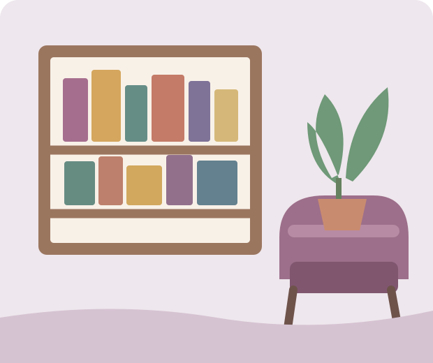

Histórias para todos os gostos
O universo dos livros
Da fantasia ao relato histórico, os livros oferecem muitas formas de aprender, imaginar e enxergar o cotidiano por outros ângulos.
Há um gênero esperando por você
Os gêneros literários ajudam a organizar obras que compartilham características, temas ou estilos. Eles podem servir como ponto de partida, mas não são caixas fechadas: muitos livros misturam elementos de diferentes gêneros.
Na fantasia, encontramos mundos imaginários e acontecimentos extraordinários. O mistério convida o leitor a reunir pistas. A ficção científica explora possibilidades ligadas à ciência e à tecnologia, enquanto a poesia brinca com ritmo, imagens e sentidos das palavras.
Leitura também é descoberta
Bibliotecas, clubes de leitura, feiras e indicações de amigos são ótimos lugares para conhecer autores e títulos. Também vale experimentar formatos diferentes, como contos, romances, quadrinhos, livros ilustrados e audiolivros.

Seu próximo capítulo
Dicas simples para criar um momento de leitura
- Escolha um assunto que desperte sua curiosidade, sem se preocupar com modismos.
- Comece com alguns minutos por dia e ajuste o ritmo à sua rotina.
- Experimente visitar uma biblioteca ou trocar indicações com amigos.
- Se um livro não combinar com você neste momento, tudo bem escolher outro.
Tem uma indicação para compartilhar? Envie uma sugestão pela página de contato.